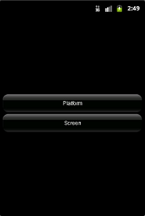

ResourceTest is a simple application for all platforms that demonstrates how to use the Resource Compiler and how to handle the resource loading/unloading.
|  | ||
| Start screen on Android | Platform image loaded on Android | Screen image loaded on Android |
This application uses the MoSync MAUI C++ Library, and works on all platforms supported by this library (see Feature/Platform Support).
This example is included in the MoSync SDK installation in the /examples folder. For information on importing the examples into your workspace, see Importing the Examples.
When launched, this application displays a start screen with two buttons. Touch the Platform button to load and display an image appropriate to the platform, touch the Screen button to load and display and image appropriate for the device's screen size.
This example implements the resource loading on different conditions using an XML list. When built and launched on a device, it checks for the platform (iOS, Android, Windows Phone, etc.) and screen type (small, normal, large, xlarge) and displays the corresponding image according to the user’s choice.
The project has: